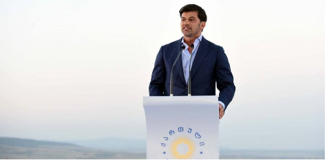

Son xəbərlər
Gürcüstanda Tiflis şəhər meri vəzifəsinə namizədlərin qeydiyyatı davam edir
20.08.2017 15:12 Oktyabrın 7-də Türkiyə Respublikasının Prezidenti Rəcəb Tayyib Ərdoğan Azərbaycan Respublikasının Prezidenti İlham Əliyevə telefonla zəng edib. Söhbət zamanı Azərbaycan-Türkiyə ikitərəfli münasibətlərinin müxtəlif aspektləri barədə fikir mübadiləsi aparıldı. Qeyd olundu ki, ölkələrimiz arasında dostluq və qardaşlıq əlaqələri uğurla inkişaf edir. Eyni zamanda, Prezident RəcəbTayyib Ərdoğanın oktyabrın sonunda Azərbaycana nəzərdə tutulmuş səfəri və səfərin proqramı ilə bağlı məsələlər müzakirə edildi. GUAM üzv ölkələrin əməkdaşlığı üçün vacib platformaya çevrilib. Təşkilat üzv ölkələrin ərazisində münaqişələrin həlli məsələsində səylərin birləşdirilməsində önəmli rola malikdir. AZƏRTAC xəbər verir ki, bu fikirləri Azərbaycanın xarici işlər naziri Elmar Məmmədyarov GUAM xarici işlər nazirlərinin Tbilisidə keçirilən görüşündə bildirib. Nazir deyib ki, üzv dövlətlər əlaqələri inkişaf etdirmək üçün, ilk növbədə, müstəqilliklərini möhkəmləndirməli, məruz qaldıqları işğal faktından qurtulmalıdırlar. GUAM-a üzv olan dörd ölkə demək olar ki, oxşar problemlərdən əziyyət çəkir. Bunun üçün də əməkdaşlıq daha da gücləndirilməlidir. Bu, üzv ölkələrin inkişafına və əhalisinin firavan həyatının təmin olunmasına gətirib çıxaracaq. “GUAM-a üzv dövlətlərin ərazi bütövlüyünün pozulması ilə bağlı Azərbaycanın müvafiq bəyanatları var. Biz beynəlxalq hüququn tələblərinə uyğun olaraq ərazi bütövlüyü çərçivəsində ölkələrin sərhədlərini tanıyırıq. Bu istiqamətdə səylərimizi davam etdirəcəyik”, - deyə E.Məmmədyarov vurğulayıb.
Multimedia
Bütün videolarDərinin zədələnməməsi üçün günün müəyyən saatlarında günəşlənmək
Dərinin zədələnməməsi üçün günün müəyyən saatlarında günəşlənmək
Dərinin zədələnməməsi üçün günün müəyyən saatlarında günəşlənmək
Dərinin zədələnməməsi üçün günün müəyyən saatlarında günəşlənmək